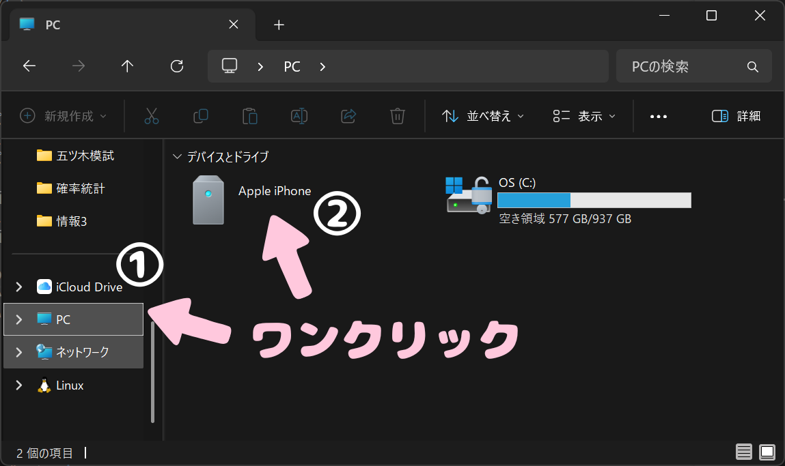

1章 スマホ→パソコンに写真を移動する方法
用意するもの
- スマホ
- ケーブル
- パソコン
※ケーブルは普段スマホを充電するときに使っているものでOKです。
手順
- スマホとパソコンをケーブルでつなぎます。
- スマホの画面に「信頼しますか？」というポップアップが出てくるのでそのま信頼を押します。
- パソコンの画面でファイルアプリを1回クリックで開きます。
- 横のバーからPC→Apple iphone→Internal Storageを選択 
- ここまで出来たら移動先のパソコンのフォルダを開くために、パソコンのファイルアプリを1回右クリックします。
- エクスプローラーを一回クリックすると新しいファイルアプリが開きます。
- 移動先のフォルダを選んでください（自分の好きなところを開いてください。）
- 画面の一番右上にある□の上にマウスを移動させます。（クリックはしません）
- □にマウスを合わせると画面を何分割するかが表されたイラストが出てきます。写真と同じものを選んでください。
- 反対側にスマホのファイルアプリを表示したいので、スマホのアプリが開いているファイルアプリを選択します。
- パソコン画面のスマホ側のファイルアプリでほしい写真のフォルダを開く
- ほしい写真を選択して移動します。
スマホとパソコンどちらから繋いでも大丈夫！
スマホの画面を付けただけでは、ポップアップが出てこないことがあります。もし出てこないときはパスワードのロックを解除し、スマホのホーム画面を見てみてください！

もしクリックしてしまったら、もう一度□ボタンを押したら元の画面の大きさに戻ります。
もしこの時に、何かアイコンのついた四角が表示されているときは必ず、何も映っていない方の四角を選んでください。
写真の探し方
数字のフォルダがたくさん出てきますが、これはスマホの写真を撮った日ごとに分けられています。
例えば、2023年10月1日に撮った写真は「202310_」というフォルダに入っています。自分が欲しい写真をいつ撮ったかある程度予想してフォルダを開いてみてください。
また、スマホで移動したい写真を探すと撮影日がわかるので、そちらを参考にしても良いでしょう。
写真が見えにくい時
画面右上の表示という文字をクリックします。
表示の中にある「特大アイコン」を選択します。
画像が選択できているかの確認
画像の周りに青い枠が出てきたら選択できています。
ほしい写真を選択するには、ほしい写真を1回クリックします。もしほしい写真が2枚以上ある場合は、Ctrlキーを押しながらほしい写真を1回クリックしてください。
移動させるときは二つの方法があります。
パターン1 スマホにもパソコンにもデータを残したいとき
写真を選択した（写真の周りが色がついた）状態でCtrlキーとCキーを同時に押します。次に移したい先ファイルアプリの空白の部分を一度クリックしてctrlキーとVキーを同時に一度押します。
パターン2 スマホの画像は消してパソコンに移動したいとき
写真を選択した（写真の周りが色がついた）状態でCtrlキーとXキーを同時に押します。次に移したい先ファイルアプリの空白の部分を一度クリックしてctrlキーとVキーを同時に一度押します。